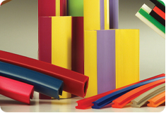

Your Preferred Manufacturer of Custom Extruded Products

Our team has the knowledge, experience, and commitment to serve all your custom extrusion manufacturing needs!
Our Mission
We are committed to attaining world-class quality status in our products. Production takes place in a worker friendly culture which honors our commitment to our community and environment.
Each member of our team serves our clients by providing excellence in quality, value, on-time delivery, and maintaining the highest ethical standards. The achievement of these objectives results in customer satisfaction and increased market opportunity.
Preferred Plastics is a custom extruder of thermoplastic resins, specializing in rigid, flexible, and co-extruded products for a wide range of markets throughout the world. Our team works cohesively and comprehensively to give you the best engineered product at the highest quality possible.
If you're looking for a team that's ready for your project, knowledgeable and supportive, and is experienced in over 10 markets, then we're the team for you!
With locations throughout the nation, we have the manpower to handle your project and to deliver it on time - all the time.
From agriculture to automotive, our team offers a wide variety of expertise and experience in providing world-class quality custom extruded products.
- We have been in business since 1975.
- We have been recognized as one of the "Top 150 Profile Extruders in North America" - 13 Years in a row!
- We have been featured in Plastics News with our innovative, business-related news.
- We are continually named "Supplier of the Year" by clients, including our Fortune 500 customers.

By choosing Preferred Plastics as your custom extrusion manufacturer, you will:
- Spend Less Time Managing!
We are the project managers - that's our job. - Stop Worrying About the Specifications!
Our team has engineers on staff to help. - Rely on Someone You Can Trust - Guaranteed!
We are proud of the reputation we've built with our clients and industry peers.
We take pride in the integrity of our people, products, and services. Please give us an opportunity to quote your next custom extrusion project by clicking here.